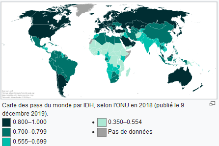
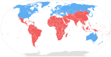

Les PDEM sont des pays où la majorité de la population accède à tous ses besoins vitaux, c'est-à-dire l'accès à un logement décent, à l'eau potable, à la santé, à l'éducation et à la nourriture. Les premières définitions ne faisaient appel qu'au développement économique, les pays développés étant ceux dont le PIB est élevé. On raisonne maintenant selon des critères de développement humain, par exemple avec l'IDH.
l'IDHest un indice statistique composite pour évaluer le taux de développement humain des pays du monde. l'IDH se fondait alors sur trois critères : le PIB par habitant, l'espérance de vie à la naissance et le niveau d'éducation des enfants de 17 ans et plus. cartes-des-pays-du-monde-par-IDH
Le PNUD retient deux définitions pour les pays développés :
Dans l'ensemble, les pays les plus évolués :
Depuis les années et l'émergence des exigences de développement durable, le développement des pays les plus avancés techniquement, tel qu'il s'est mis en place au cours de la Révolution industrielle, est remis en question du fait du fort impact environnemental des activités industrielles, et d'une manière générale du mode de vie de type occidental. Les experts d'ONG comme le WWF ont mis en évidence, grâce au concept d'empreinte écologique, que les pays dits « développés » ont un mode de vie qui n'est pas généralisable tel quel à l'ensemble de la planète. Cette situation pose des problèmes d'équité sociale entre les pays les plus avancés techniquement (pays du Nord), et les autres (pays du Sud). pays du sud et du nord
| Norvège | Suisse | Australie |
|---|---|---|